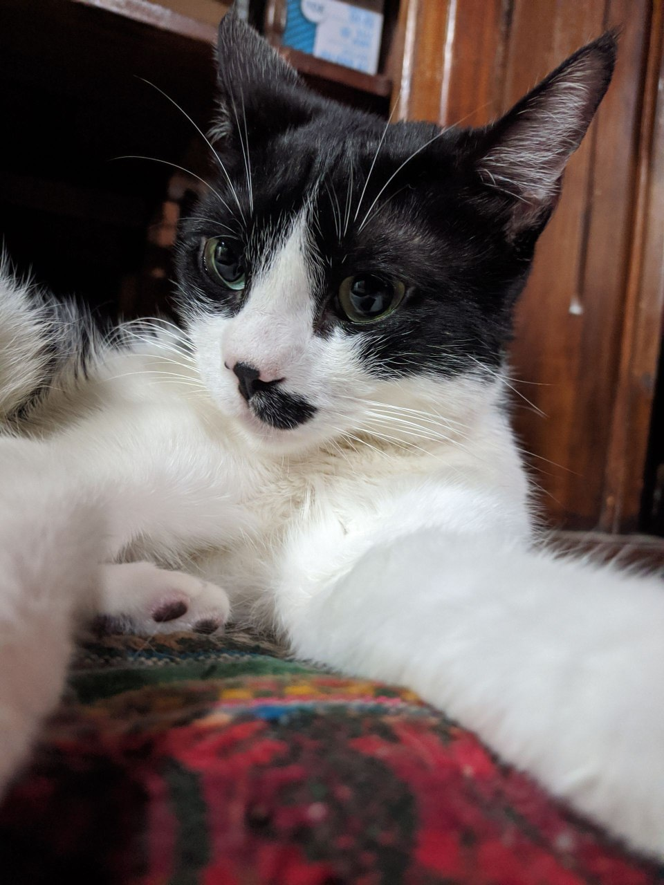
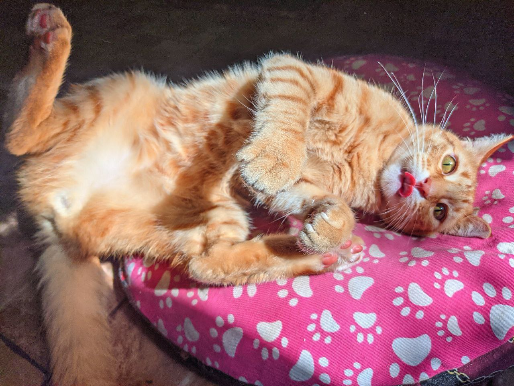
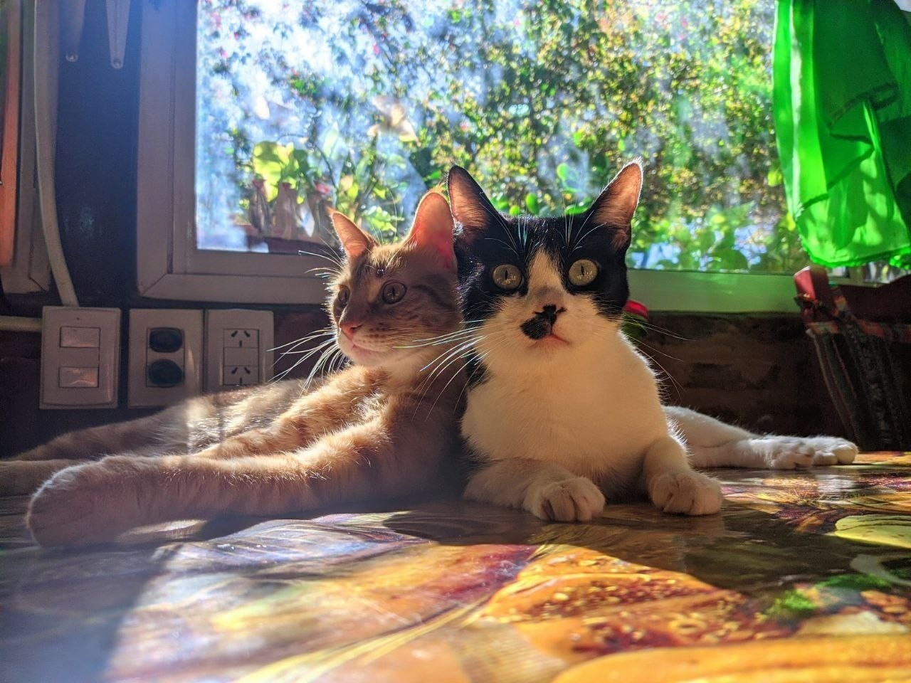

Travesuras sin pausa y muchos ronroneos
Todo comenzó con un gato vaca. Pequeño, peludo, silencioso, y con la increíble habilidad de aparecer misteriosamente en los lugares más inverosímiles. Ese era Cato. Un día estaba, y ya no se fue más. Se instaló con estilo, como si la casa fuera suya desde antes de nacer. ¿Dormir 18 horas al día? Sí. ¿Comer solo si es gourmet? Obvio. ¿Dejar que lo acaricien? Solo si se firmó el contrato invisible de consentimiento felino. Cato es el jefe. El CEO del sillón. El guardián silencioso de la heladera.
Unos meses después, llegó un torbellino naranja con forma de gato: León. 35 días de pura velocidad, ojos enormes, y cero respeto por la gravedad ni las normas de convivencia. Saltaba sobre Cato como si fuera un trampolín. Corría en círculos sin motivo. Atacaba sombras. Se metía en cajas, bolsos, cajones, tazas y un zapato. En menos de una semana, se había ganado el título de “Empleado del mes en travesuras”.
Contra todo pronóstico, no se odiaron. Se hicieron amigos. Con reglas, sí: Cato le enseñó que los humanos abren latas y sirven de almohada. León le enseñó que el sillón es una pista de carreras nocturna. Hoy reinan juntos. Duermen en combo, se pelean por deporte, odian la aspiradora y conspiran para tomar el control total de la casa (y del mundo, si les da la siesta). Bienvenidos a su reino: caos, pelos, miau... y mucha ternura.